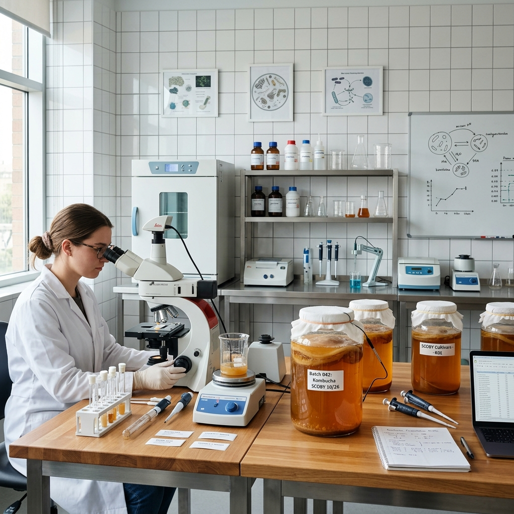
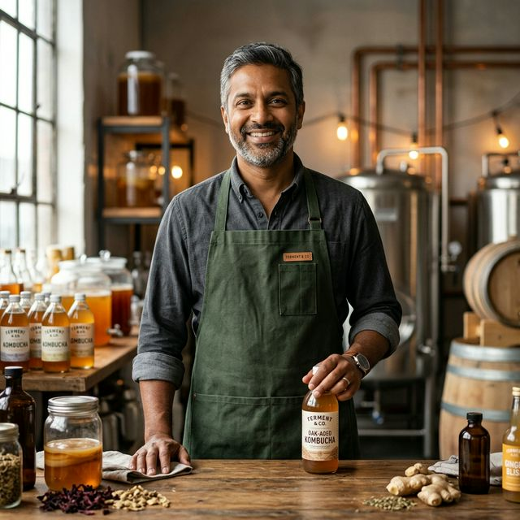
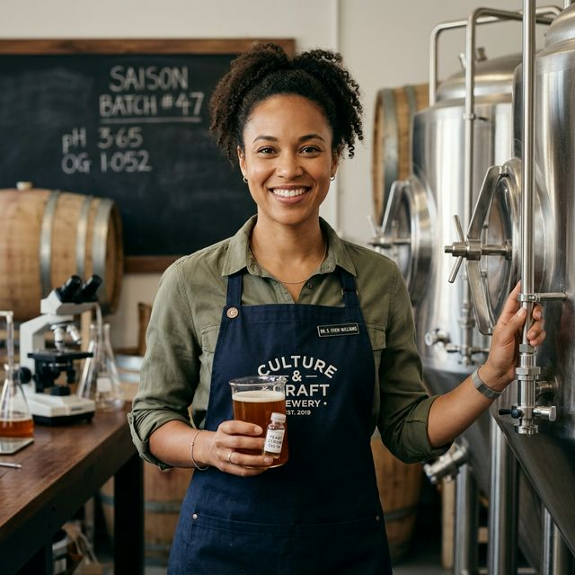
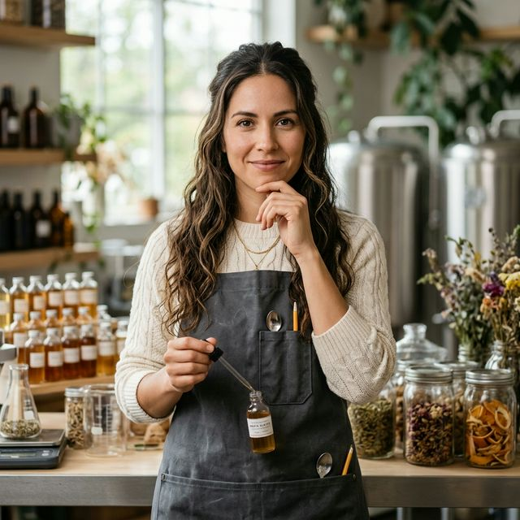

The Origin
Brewed with Purpose
Founded in 2024, our brewery began with a simple mission: to bring the ancient art of kombucha brewing into the modern age without losing the soul of the process.
Every batch is hand-crafted in small volumes to ensure the perfect balance of acidity, effervescence, and flavor. We believe in transparency, sustainability, and the transformative power of probiotics.
What started as a weekend hobby in a Portland kitchen has grown into a craft beverage brand trusted by thousands of wellness enthusiasts and partnered with over 50 local cafés and health stores.

What We Stand For
Our Core Values
100% Organic
Every ingredient is certified organic and sourced from trusted local farms. No shortcuts, ever.
Science-Backed
Our fermentation process is guided by microbiologists to ensure optimal probiotic profiles in every bottle.
Sustainable
Glass bottles, compostable packaging, and a carbon-neutral delivery partnership. Earth first, always.
Community
10% of every subscription goes to local urban farming initiatives and food access programs.
How We Brew
The 30-Day Process
We never rush. Each brew begins with a hand-selected SCOBY (symbiotic culture of bacteria and yeast) that has been nurtured since 2024.
Our Evolution
Brewery Milestones
The First SCOBY
Oliver Thorne begins experimenting with wild fermentation in a small Portland garage.
The Lab Opens
Dr. Sarah Chen joins as lead microbiologist, establishing our focus on probiotic density.
Artisanal Scale
Kombucha Brewery expands to its current solar-powered facility, reaching 10,000 monthly subscribers.
Quality Control
The Living Lab
We don't just brew by taste; we brew by science. Our dedicated microbiology lab monitors every single batch to ensure the perfect pH balance and a guaranteed live culture count.
- ✓ Liquid Chromatography — To verify nutrient and enzyme profiles.
- ✓ Microbial Mapping — Ensuring a diverse and thriving colony of beneficial bacteria.
- ✓ Purity Assurance — Strict zero-contamination protocols for raw fermentation.

The Makers
Meet the Brew Crew
Passionate brewers, microbiologists, and flavor artists dedicated to every single bottle.

Oliver Thorne
With 15 years in traditional fermentation, Oliver oversees every batch with a master's touch.

Dr. Sarah Chen
Sarah ensures our SCOBY cultures are thriving and our probiotic density is at peak levels.
Julian West
Julian travels to organic tea estates to find the rarest, most sustainable leaves for our base.

Maria Alaves
Maria designs our seasonal collections, balancing botanicals like an apothecary artist.